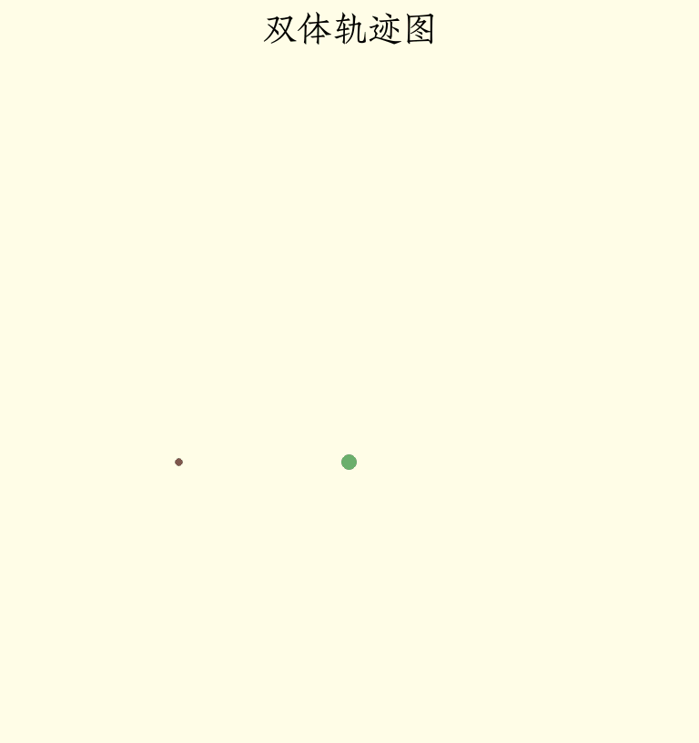

Phyrs - 0x05
archive time: 2025-07-15
牛爵爷就是牛
之前我们的例子都是单体的，也就是是只有一个粒子运动，现在我们再来看看多体情况下该怎么分析
牛顿第三定律
牛顿第三定律虽然不起眼，但这正是多体运动分析的基石
物体 A 对物体 B 施加了一个力，那么物体 B 也会对物体 A 施加一个等大反向的力：
\vec{F}_{A B} = -\vec{F}_{B A}
这称为作用力和反作用力，这两个力同时产生，没有时间顺序
万有引力
在卫星运动中，我们使用了万有引力， 这其实就是一个典型的相互作用力，即卫星对星体的引力也是星体对卫星的引力：
pub fn universal_gravity<R: RealFloat, const E: usize>(
center: Particle<R, E>,
p: Particle<R, E>,
) -> VectorC<R, E> {
let gravity_constant = real_to_frac::<Double, R>(Double::of(6.6743e-11));
let dr = p.position - center.position;
let diretion_vector = normalize(&dr);
let distance = euclidean_norm(&dr);
// Fg = - (G M1 M2 / |r|^2) (r/|r|)
-diretion_vector * gravity_constant * center.mass * p.mass / distance.power(R::one() + R::one())
}其中方向向量从引力中心 from 指向 p，而引力方向与方向向量相反，即 -diretion_vector
如果交换 from 和 p，那么得到的引力方向就会反向，符合牛顿第三定律
恒定斥力
恒定斥力表示物体 A 对物体 B 有一个恒定的斥力，如果我们写成：
pub fn wrong_constant_repulsive_force<R: RealFloat, const E: usize>(
force: VectorC<R, E>,
_p: Particle<R, E>,
) -> VectorC<R, E> {
force
}这很明显是错误的，因为这没有考虑两个物体的位置变化，所以正确的方式应该是传入力的大小而不是力本身：
pub fn constant_repulsive_force<'a, R: RealFloat + 'a, const E: usize>(
force: R,
) -> Rc<dyn Fn(Particle<R, E>, Particle<R, E>) -> VectorC<R, E> + 'a> {
Rc::new(
move |center: Particle<R, E>, p: Particle<R, E>| -> VectorC<R, E> {
normalize(&(p.position - center.position)) * force.clone()
},
)
}这样，我们就可以根据两个物体的相对位置来得到正确的斥力， 并且交换两个物体，斥力方向也会相应改变
线性弹力
这里假设弹簧只能沿轴线拉伸和压缩，并且不会超过弹性限度， 根据两端的位置，弹簧对于两端都会产生一个力：
| 位置关系 | 弹簧状态 | 在端点 A 的力 | 在端点 B 的力 |
|---|---|---|---|
$\lVert\vec{r}_{B A}\rVert > r_e$ | 拉伸 | $k \left(\lVert\vec{r_{B A}}\rVert - r_e\right) \hat{r}_{B A}$ | $-k \left(\lVert\vec{r_{B A}}\rVert - r_e\right) \hat{r}_{B A}$ |
$\lVert\vec{r}_{B A}\rVert = r_e$ | 平衡 | $0$ | $0$ |
$\lVert\vec{r}_{B A}\rVert < r_e$ | 压缩 | $k \left(\lVert\vec{r_{B A}}\rVert - r_e\right) \hat{r}_{B A}$ | $-k \left(\lVert\vec{r_{B A}}\rVert - r_e\right) \hat{r}_{B A}$ |
这里我们考虑端点 B 的力：
pub fn linear_spring<'a, R: RealFloat + 'a, const E: usize>(
k: R,
original_length: R,
) -> Rc<dyn Fn(Particle<R, E>, Particle<R, E>) -> VectorC<R, E> + 'a> {
Rc::new(
move |center: Particle<R, E>, p: Particle<R, E>| -> VectorC<R, E> {
let dr = p.position - center.position;
let dx = euclidean_norm(&dr) - original_length.clone();
let direction_vector = normalize(&dr);
-direction_vector * k.clone() * dx
},
)
}如果 A 端固定，则可以简化为：
pub fn fixed_linear_spring<'a, R: RealFloat + 'a, const E: usize>(
k: R,
original_length: R,
fixed_postion: VectorC<R, E>,
) -> Rc<dyn Fn(Particle<R, E>) -> VectorC<R, E> + 'a> {
Rc::new(move |p: Particle<R, E>| -> VectorC<R, E> {
linear_spring(k.clone(), original_length.clone())(
// 只有位置的虚粒子
Particle::without_charge(
R::zero(),
fixed_postion.clone(),
VectorC::default(),
R::zero(),
),
p,
)
})
}有心力
可以发现，万有引力、恒定斥力和线性弹力有一个共通点， 即由两个物体产生并且方向沿两个物体的连线， 这种力称为有心力1，可以选取其中一个物体作为力中心点：
\vec{F} = F \hat{r}
其中有心力还可以分为强有心力和弱有心力，强有心力的大小与两个物体的间距有关：
\vec{F} = F(\lVert\vec{r}\rVert) \hat{r}
使用 Rust 可以表示为：
pub fn central_force<'a, R: RealFloat + 'a, const E: usize>(
relation: Rc<dyn Fn(R) -> R + 'a>,
) -> Rc<dyn Fn(Particle<R, E>, Particle<R, E>) -> VectorC<R, E> + 'a> {
Rc::new(
move |center: Particle<R, E>, p: Particle<R, E>| -> VectorC<R, E> {
let dr = p.position - center.position;
normalize(&dr) * relation(euclidean_norm(&dr))
},
)
}那么上述的万有引力、恒定斥力以及线性弹力可以改写为：
pub fn universal_gravity<'a, R: RealFloat + 'a, const E: usize>(
center: Particle<R, E>,
p: Particle<R, E>,
gravity_constant: R,
) -> VectorC<R, E> {
let m1 = center.mass.clone();
let m2 = p.mass.clone();
// fg = -G M1 M2 / |r|^2
let relation = Rc::new(move |distance: R| -> R {
-gravity_constant.clone() * m1.clone() * m2.clone() / distance.power(R::one() + R::one())
});
central_force(relation)(center, p)
}
pub fn constant_repulsive_force<'a, R: RealFloat + 'a, const E: usize>(
force: R,
) -> Rc<dyn Fn(Particle<R, E>, Particle<R, E>) -> VectorC<R, E> + 'a> {
central_force(Rc::new(move |_: R| -> R { force.clone() }))
}
pub fn linear_spring<'a, R: RealFloat + 'a, const E: usize>(
k: R,
original_length: R,
) -> Rc<dyn Fn(Particle<R, E>, Particle<R, E>) -> VectorC<R, E> + 'a> {
central_force(Rc::new(move |distance: R| -> R {
-k.clone() * (distance - original_length.clone())
}))
}多体系统
一般而言，我们研究的对象往往不只一个物体，这时候就需要引入多体系统来管理系统状态
对于系统的力通常可以分为两类，一类是系统内部物体之间相互作用的力，也被称为内力， 另一类是系统外对于系统内某个物体施加的力，称为外力：
#[derive(Clone)]
pub enum SystemForce<R: RealFloat, const E: usize> {
ExternalForce(usize, Rc<dyn Fn(Particle<R, E>) -> VectorC<R, E>>),
InternalForce(
usize,
usize,
Rc<dyn Fn(Particle<R, E>, Particle<R, E>) -> VectorC<R, E>>,
),
}其中 usize 表示在系统中的物体的索引，例如物体 1 和物体 2 之间的力可以表示为：
InternalForce(1, 2, Rc::new(|_, _| VectorC::default()))整个系统的状态就是由内部所有物体的状态以及作用力组成：
#[derive(Clone)]
pub struct ParticleSystem<R: RealFloat, const E: usize> {
pub particles: Vec<Particle<R, E>>,
pub time: R,
}这里可以使用 Builder 模式2来构建系统：
pub struct ParticleSystemBuilder<R: RealFloat, const E: usize>(ParticleSystem<R, E>);
impl<R: RealFloat, const E: usize> ParticleSystemBuilder<R, E> {
pub fn of() -> Self {
ParticleSystemBuilder(ParticleSystem {
particles: Vec::new(),
time: R::zero(),
})
}
pub fn add_particle(mut self, p: Particle<R, E>) -> Self {
self.0.particles.push(p);
self
}
pub fn set_time(mut self, time: R) -> Self {
self.0.time = time;
self
}
pub fn build(self) -> ParticleSystem<R, E> {
self.0
}
}系统内的非相对论体系的牛顿第二定律可以用如下方程组来表示：
\begin{gathered}
\dfrac{\mathrm{d}}{\mathrm{d} t} \left[t\right] = 1,
\quad\dfrac{\mathrm{d}}{\mathrm{d} t}\left[\vec{r}_n(t)\right] = \vec{v}_n(t) \\\\
\dfrac{\mathrm{d}}{\mathrm{d} t} \left[\vec{v}_n(t)\right] = \dfrac{1}{m_n}\left(
\vec{F}_{\textnormal{ex}\left[n\right]}\left(t, \vec{r}_n(t), \vec{v}_n(t)\right)
+ \sum_m \vec{F}_{n m}\left(\vec{r}_n(t) - \vec{r}_m(t), \vec{v}_n(t) - \vec{v}_m(t)\right)\right)
\end{gathered}
其中 $\vec{F}_{\textnormal{ex}\left[n\right]}$ 表示物体 n 所受合外力，
$\vec{F}_{n m}$ 表示物体 n 与物体 m 之间的内力，一般认为内力不会直接依赖于时间
我们可以复用在单体系统中定义的数值方法：
impl<R: RealFloat + 'static, const E: usize> ParticleSystem<R, E> {
pub fn force_to_acceleration(
system: &Self,
force: SystemForce<R, E>,
f2a: Rc<
dyn Fn(
Rc<dyn Fn(Particle<R, E>) -> VectorC<R, E>>,
) -> Rc<dyn Fn(Particle<R, E>) -> VectorC<R, E>>,
>,
index: usize,
) -> Rc<dyn Fn(Particle<R, E>) -> VectorC<R, E>> {
let f2a_capture = f2a.clone();
match force {
SystemForce::ExternalForce(n, f_ex) if n == index => f2a_capture(f_ex.clone()),
SystemForce::InternalForce(n, m, f_in) if n == index => {
let p_m = system.particles[m].clone();
let one_body_force =
Rc::new(move |p: Particle<R, E>| -> VectorC<R, E> { f_in(p_m.clone(), p) });
f2a_capture(one_body_force)
}
SystemForce::InternalForce(m, n, f_in) if n == index => {
let p_m = system.particles[m].clone();
let one_body_force =
Rc::new(move |p: Particle<R, E>| -> VectorC<R, E> { f_in(p_m.clone(), p) });
f2a_capture(one_body_force)
}
_ => Rc::new(|_| VectorC::default()),
}
}
pub fn system_transition(
forces: Vec<SystemForce<R, E>>,
f2a: Rc<
dyn Fn(
Rc<dyn Fn(Particle<R, E>) -> VectorC<R, E>>,
) -> Rc<dyn Fn(Particle<R, E>) -> VectorC<R, E>>,
>,
dt: R,
particle_transition: Rc<
dyn Fn(
Rc<dyn Fn(Particle<R, E>) -> VectorC<R, E>>,
R,
) -> Rc<dyn Fn(Particle<R, E>) -> Particle<R, E>>,
>,
) -> Rc<dyn Fn(Self) -> Self> {
let f2a_capture = f2a.clone();
Rc::new(
move |system: ParticleSystem<R, E>| -> ParticleSystem<R, E> {
let particles = system
.particles
.iter()
.enumerate()
.map(|(idx, p)| {
let f2a_inner_capture = f2a_capture.clone();
let forces_capture = forces.clone();
let system_capture = system.clone();
let acceleration = Rc::new({
move |p: Particle<R, E>| -> VectorC<R, E> {
forces_capture
.iter()
.map(|f| {
Self::force_to_acceleration(
&system_capture,
f.clone(),
f2a_inner_capture.clone(),
idx,
)
})
.map(|a_fn| a_fn(p.clone()))
.fold(VectorC::default(), |acc, a| acc + a)
}
});
particle_transition(acceleration, dt.clone())(p.clone())
})
.collect::<Vec<Particle<R, E>>>();
ParticleSystem {
particles,
time: system.time + dt.clone(),
}
},
)
}
pub fn simulate<'a>(self, transition: Rc<dyn Fn(Self) -> Self + 'a>) -> Iterate<'a, Self> {
Iterate::of(transition, self)
}
}作为验证，我们来看一个双体系统的例子：
use std::rc::Rc;
use phyrs::newton::{
particle::Particle,
relativity::{SPEED_OF_LIGHT, relativity_acceleration},
system::{ParticleSystem, ParticleSystemBuilder, SystemForce},
utils::central_force,
};
use plotters::{
chart::ChartBuilder,
prelude::{BitMapBackend, Circle, EmptyElement, IntoDrawingArea},
series::{LineSeries, PointSeries},
style::{
ShapeStyle,
full_palette::{BLUE_400, GREEN_400, ORANGE_400, RED_400, YELLOW_50},
},
};
use rmatrix_ks::{
matrix::vector::{VectorC, basis_vector},
number::{
instances::double::Double,
traits::{floating::Floating, zero::Zero},
},
};
fn main() {
run().unwrap()
}
fn run() -> Option<()> {
let system = ParticleSystemBuilder::<Double, 2>::of()
.add_particle(Particle::without_charge(
Double::of(2.0),
basis_vector(1) * Double::of(-3.0),
basis_vector(2) * Double::of(-3.0),
Double::zero(),
))
.add_particle(Particle::without_charge(
Double::of(3.0),
basis_vector(1) * Double::of(2.0),
basis_vector(2) * Double::of(2.0),
Double::zero(),
))
.build();
let force = Rc::new(
|center: Particle<Double, 2>, p: Particle<Double, 2>| -> VectorC<Double, 2> {
let m1 = center.mass.clone();
let m2 = p.mass.clone();
let relation = Rc::new(move |distance: Double| -> Double {
-Double::of(16.0) * m1.clone() * m2.clone() / distance.power(Double::of(2.0))
});
central_force(relation)(center, p)
},
);
let f2a = Rc::new(
|force: Rc<dyn Fn(Particle<Double, 2>) -> VectorC<Double, 2>>| -> Rc<dyn Fn(_) -> _> {
Rc::new(move |p: Particle<Double, 2>| -> VectorC<Double, 2> {
relativity_acceleration(p, SPEED_OF_LIGHT, force.clone())
})
},
);
let one_step = ParticleSystem::system_transition(
vec![SystemForce::InternalForce(0, 1, force)],
f2a,
Double::of(0.001),
Rc::new(Particle::dormand_prince_transition),
);
let total_time = 64.0;
let states = system
.simulate(one_step)
.take_while(|s| s.time < Double::of(total_time))
.map(|s| {
(
s.time,
s.particles
.iter()
.map(|p| (p.position[(1, 1)].raw(), p.position[(2, 1)].raw()))
.collect::<Vec<(f64, f64)>>(),
)
})
.collect::<Vec<_>>();
// 绘图
let draw_area = BitMapBackend::gif("result/draw_double.gif", (768, 816), 1)
.ok()?
.into_drawing_area();
for s in states
.iter()
.step_by((states.len() as f64 / total_time / 10.0).floor() as usize)
{
draw_area.fill(&YELLOW_50).ok()?;
let mut chart = ChartBuilder::on(&draw_area)
.margin(10)
.caption("双体轨迹图", ("Zhuque Fangsong (technical preview)", 48))
.build_cartesian_2d(-8.0..12.0, -8.0..12.0)
.ok()?;
chart
.draw_series(LineSeries::new(
states
.iter()
.take_while(|si| si.0 <= s.0)
.map(|si| (si.1[0].0, si.1[0].1)),
&ORANGE_400,
))
.ok()?;
chart
.draw_series(PointSeries::of_element(
[(s.1[0].0, s.1[0].1)],
4,
ShapeStyle::from(RED_400),
&|coord, size, style| {
EmptyElement::at(coord) + Circle::new((0, 0), size, style.filled())
},
))
.ok()?;
chart
.draw_series(LineSeries::new(
states
.iter()
.take_while(|si| si.0 <= s.0)
.map(|si| (si.1[1].0, si.1[1].1)),
&BLUE_400,
))
.ok()?;
chart
.draw_series(PointSeries::of_element(
[(s.1[1].0, s.1[1].1)],
8,
ShapeStyle::from(GREEN_400),
&|coord, size, style| {
EmptyElement::at(coord) + Circle::new((0, 0), size, style.filled())
},
))
.ok()?;
draw_area.present().ok()?;
}
Some(())
}得到的图像为：

终于实现多体系统了，可以用来模拟一些有趣的东西了
-
Central force.Wikipedia [DB/OL].(2025-05-16)[2025-07-15]. https://en.wikipedia.org/wiki/Central_force ↩
-
Builder pattern.Wikipedia [DB/OL].(2025-05-05)[2025-07-15]. https://en.wikipedia.org/wiki/Builder_pattern ↩